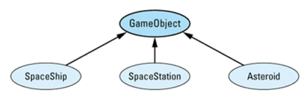

条款31：让函数根据一个以上的对象来决定怎么虚拟
编写一个游戏，宇宙飞船，太空站和小行星的碰撞游戏，不同碰撞处理的方式的不同。

class GameObject { ... };
class SpaceShip: public GameObject { ... };
class SpaceStation: public GameObject { ... };
class Asteroid: public GameObject { ... };
void checkForCollision(GameObject& object1,GameObject& object2)
{
if (theyJustCollided(object1, object2)) {
processCollision(object1, object2);
}
else {
...
}
}
调用 processCollision()时，结果将取决于object1和object2的真实类型，但你并不知道其真实类型，虚函数体系只能作用在一个对象身上，它不足以解决问题，该问题称为二重调度。
解决方法
（1）用虚函数加 RTTI
class GameObject {
public:
virtual void collide(GameObject& otherObject) = 0
...
};
class SpaceShip: public GameObject {
public:
virtual void collide(GameObject& otherObject);
...
};
实现二重调度的最常见方法就是和虚函数体系格格不入的 if...then...else链。
// throw an exception of this type:
class CollisionWithUnknownObject {
public:
CollisionWithUnknownObject(GameObject& whatWeHit);
...
};
void SpaceShip::collide(GameObject& otherObject)
{
const type_info& objectType = typeid(otherObject);
if (objectType == typeid(SpaceShip)) {
SpaceShip& ss = static_cast<SpaceShip&>(otherObject);
process a SpaceShip-SpaceShip collision;
}
else if (objectType == typeid(SpaceStation)) {
SpaceStation& ss =
static_cast<SpaceStation&>(otherObject);
process a SpaceShip-SpaceStation collision;
}
else if (objectType == typeid(Asteroid)) {
Asteroid& a = static_cast<Asteroid&>(otherObject);
process a SpaceShip-Asteroid collision;
}
else {
throw CollisionWithUnknownObject(otherObject);
}
}
我们需要检测的只是一个对象的类型。另一个是*this，它的类型由虚函数体系判断。我们现在处于SpaceShip的成员函数中，所以*this肯定是一个 SpaceShip对象，因此我们只需找出 otherObject的类型。
这么写的问题出在最后一个else，可能会抛出一个未知异常。还有如果添加一个新类，修改非常麻烦，，易出现bug。
（2）只使用虚函数
class SpaceShip; // forward declarations
class SpaceStation;
class Asteroid;
class GameObject {
public:
virtual void collide(GameObject& otherObject) = 0;
virtual void collide(SpaceShip& otherObject) = 0;
virtual void collide(SpaceStation& otherObject) = 0;
virtual void collide(Asteroid& otherobject) = 0;
...
};
class SpaceShip: public GameObject {
public:
virtual void collide(GameObject& otherObject);
virtual void collide(SpaceShip& otherObject);
virtual void collide(SpaceStation& otherObject);
virtual void collide(Asteroid& otherobject);
...
};
void SpaceShip::collide(GameObject& otherObject)
{
otherObject.collide(*this);
}
在SpaceShip::collide中调用的是otherObject真实类型中实现的 collide版本。在这个版本中，两个对象的真实类型都是知道的，左边的是*this（实现这个函数的类的类型），右边对象的真实类型是 SpaceShip（申明的形参类型）。
void SpaceShip::collide(SpaceShip& otherObject)
{
process a SpaceShip-SpaceShip collision;
}
void SpaceShip::collide(SpaceStation& otherObject)
{
process a SpaceShip-SpaceStation collision;
}
void SpaceShip::collide(Asteroid& otherObject)
{
process a SpaceShip-Asteroid collision;
}
同样该方法也会存在增加新的类时，需要添加新的虚函数。
（3）模拟虚函数表
使用 vtbl，编译器避免了使用 if...then...else 链，并能在所有调用虚函数的地方生成同样的代码：确定正确的vtbl下标，然后调用vtbl这个位置上存储的指针所指向的函数。
没读懂。。。。。。。。